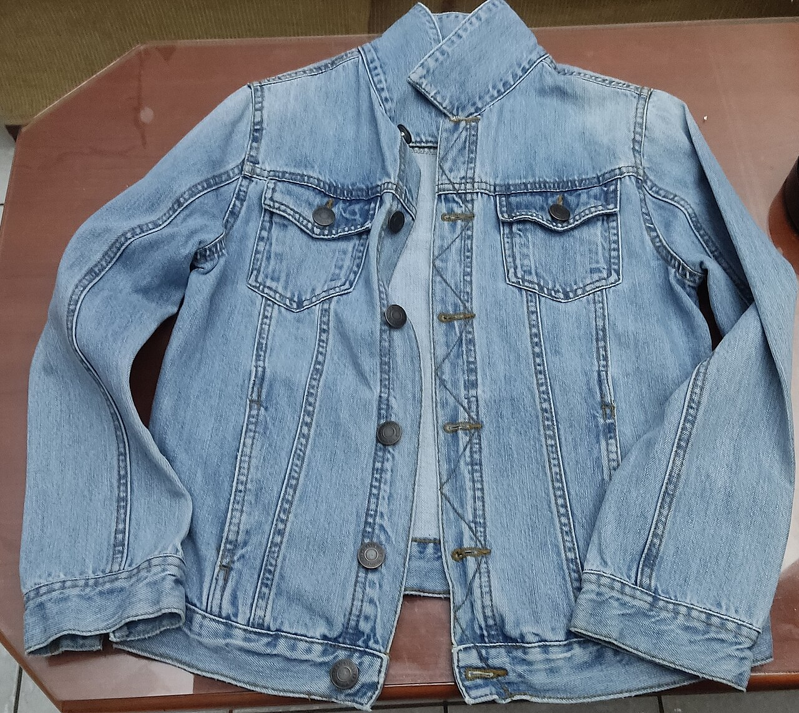
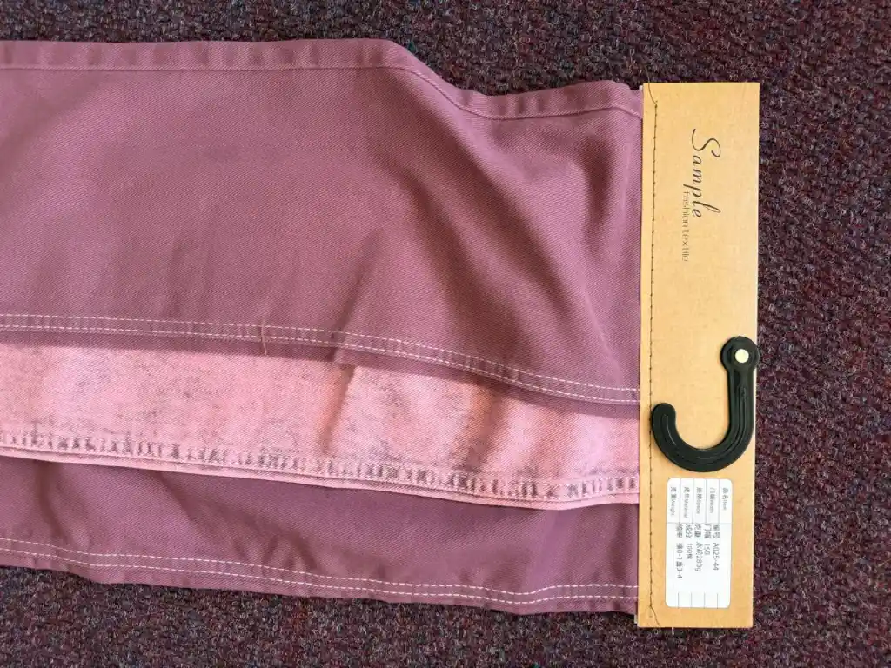

Confident, craft-adjacent, sunlight-legible. One decisive mark: a swing-ticket + viewfinder snap. Solid inks only — no gradients. Works in a single colour for swing-ticket printing, and holds at 48 px and as a 2 cm fair-badge sticker.
SVG masters · solid fills · 8px min stroke
Use on light. Stall Orange appears once: the snap dot.
Swing-ticket / stamp / receipt. No orange. Same geometry.
256 grid · 14px tag stroke · 12px viewfinder strokes · 19px dot with 7px ring · stitch 5px / 9-7 dash. Clipped corner 34px. Clearspace = hole diameter (28px) on all sides. Minimum: 32px digital / 15mm print.
48 px app-icon · 2 cm badge · sunlight
Rendered at true pixels, not scaled-down large art. Viewfinder + dot remain separable at 48 / 32 px.
Fix applied: stroke weights bumped +12% in the 48/32 masters above (separate small-size cut, same outline).
True print size: 2 cm circle + 2 cm square. White knockout on Ink survives cheap vinyl cut.
iOS 1024 · Android adaptive · no transparency
Square, full-bleed Ink. No rounding in master — iOS masks it.
Background #16150F · Foreground centred in 72 dp safe zone.
Holds in circle, squircle, rounded-rect. Keep dot ≥ 12% of icon.
| Asset | Size | Rule |
|---|---|---|
| icon-1024.png (iOS / store) | 1024 × 1024, sRGB, no alpha | Full-bleed Ink; mark centred at 50% |
| icon-foreground.svg | 432 × 432 dp vector | Artwork inside 264 dp circle safe-zone |
| icon-background | Colour #16150F | Flat. Never a photo or gradient |
| mipmap / splash | hdpi–xxxhdpi via Capacitor assets | Run: npx capacitor-assets generate --iconBackgroundColor #16150F |
| Exported files (this folder) | snaplog-icon-1024/512/192/180/48.png · snaplog-icon-fg-432.png · snaplog-icon-bg-432.png | Byte-verified via resvg 2026-11-01. iOS = full-bleed Ink. Android fg = transparent artwork, bg = flat #16150F. |
2732 master · light + dark · centred mark
2732 × 2732 master · mark top-edge at 33% · solid Paper fill
Default for dim fair halls · solid Ink fill · no photo (cheap screens band gradients)
Capacitor: centre mark at 33% height on 2732 × 2732 canvas, solid fill. Light and dark share geometry; only the field colour flips. Exported masters in docs/brand: snaplog-splash-dark-2732.png (Ink, default) + snaplog-splash-light-2732.png (Paper).
Circle-cropped · readable at 98 px
Avatar must survive against denim + busy stalls. Ink disc + Paper tag does; thin grey rings don't.

Serif display + mono tagline
For 1-colour thermal printing. Letterspaced mono, 10 chars min height 3 mm.

Ref 01 — sample hang-tag with stitch line: direct precedent for ticket lockup above.
No gradients · one accent · 2 px borders
Times Display Aa 123
Display: Times / Iowan Old Style / Georgia — headlines, wordmark. Never Inter / Roboto as display.
MONO BODY 0123456789 — AISLE B-042 ✓
Body: IBM Plex Mono / JetBrains Mono / Menlo — IDs, lots, prices. Tabular numerals everywhere.
Hover / focus: move background ±, never lighten text to muted. Focus ring 3px Stall Orange. Touch targets ≥ 44px.